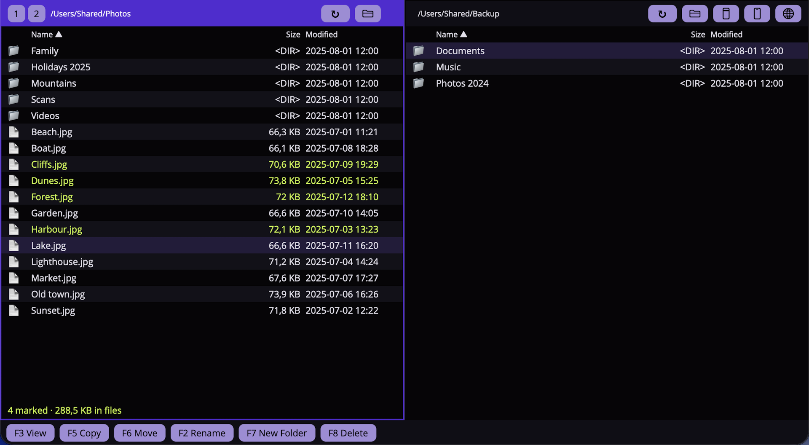
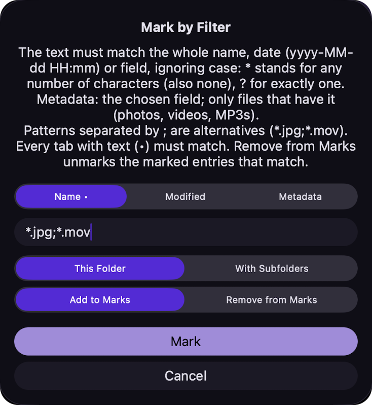
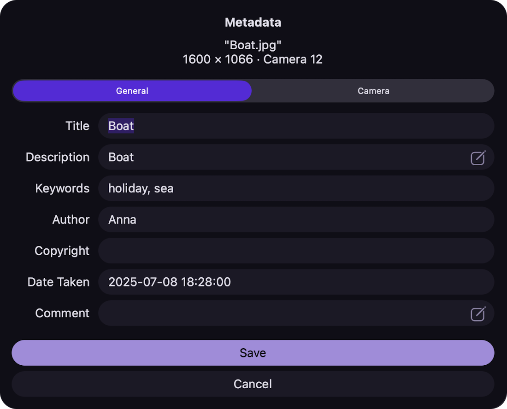
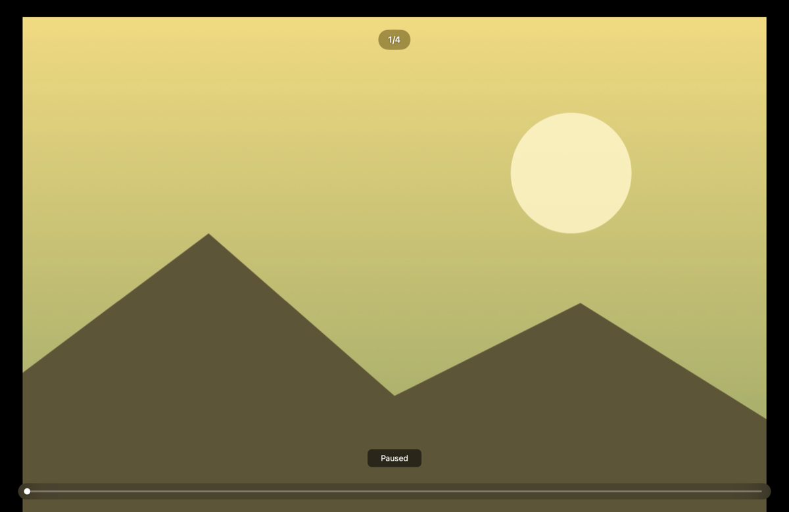
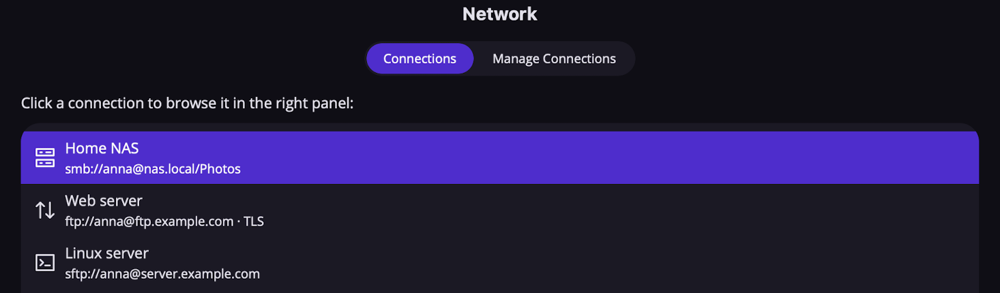

What it is
Krzychu Commander brings the classic two-panel file manager to the Mac. Two folders side by side, a cursor you drive with the keyboard, and the function keys doing the work: F5 copies, F6 moves, F8 deletes. It is built for people who sort large collections of photos and videos — mark files by name, date, camera details or the place where they were taken, edit their metadata, and show them full screen as a slideshow.
Besides folders on your Mac, the right panel can open an Android phone over USB, the photos and videos on an iPhone or iPad, and FTP, SMB and SSH servers. There is no account to create, no advertising and no analytics — your files and settings stay on your Mac.

Features
- Two panels, all keyboardArrows, Return and Backspace to browse, Tab to switch panels, type a few letters to jump to a name. Mouse, drag and drop and right-click work too.
- Copy, move, deleteF5, F6 and F8 with progress and cancel, overwrite questions, folders merged, file and folder dates kept. Deleting goes to the Trash unless you ask otherwise.
- Mark by filterMark files by name, date, metadata field or place name (“Kraków”, “Lake Garda”) — in one folder or in all subfolders at once.
- Edit metadataTitle, description, keywords, author, copyright and date of JPEG, HEIC, MOV, MP4, MKV, AVI and MP3 files — written in place, with the picture and media data left byte for byte.
- Movie and music lookupFill in a film’s, TV episode’s or song’s details and cover from an online catalogue with one click.
- SlideshowThe marked photos and videos full screen, ordered by date, with the place name and a progress bar.
- Android, iPhone & iPadCopy to and from Android phones over USB, and import photos and videos from an iPhone or iPad — no extra software needed.
- FTP, SMB & SSHBrowse servers, NAS drives and other Macs and PCs on your network, with saved connections and passwords encrypted on your Mac.
- Quick Look & cover iconsF3 previews the file under the cursor; covers and photos can be shown as file icons.
- Your lookPick a base colour and font; light and dark appearance follow the system.
Screenshots




Most used keys
| Tab | Switch between the panels |
| Space | Mark the file under the cursor and move down; ⇧Space marks by filter |
| F3 | Quick Look preview |
| F5 / F6 | Copy / move to the other panel |
| F7 | New folder |
| F8 | Move to the Trash |
| ⌘I | Edit the metadata of a photo, video or MP3 |
| ⌘S | Slideshow of the marked files |
| ⌘? | The full list in Help |
Support
Questions, bug reports and feature requests are welcome. Email is the fastest way to reach the developer:
Replies usually arrive within a few days. When reporting a problem, it helps to include your macOS version, your Mac (Apple silicon or Intel), the app version (app menu → About Krzychu Commander) and, for a device or server, what kind it is.
Frequently asked questions
- Why do I have to choose a folder for each panel?
- Apps from the Mac App Store run in a sandbox and may only open the folders you give them. Click the folder button in a panel’s header and pick a folder — for instance your home folder — and the panel can go anywhere inside it. The app remembers your choice across launches.
- My Android phone isn’t found.
- Connect it with a USB cable and unlock it. With USB debugging on, confirm “Allow USB
debugging?” on the phone. Without it, set the USB mode to “File transfer”. If Android Studio
or another adb tool is running, quit it (or run
adb kill-server) — it keeps the phone to itself. - A photo from my iPhone won’t copy.
- Most likely the original is stored only in iCloud. On the iPhone, open Settings → Apps → Photos and under “Transfer to Mac or PC” choose “Keep Originals”, or open the photo in Photos on the iPhone first so it downloads. The iPhone panel is read-only: it copies to your Mac, but never changes or deletes anything on the device.
- The network window finds no computers.
- Allow Krzychu Commander to use the local network when macOS asks (System Settings → Privacy & Security → Local Network). You can always type the server’s name or address by hand.
- Is editing metadata safe for my files?
- Only the metadata is rewritten; the picture, sound and video data are left untouched. Before anything is written, the new file is checked; if the check fails, nothing is changed and the app tells you why. The file’s creation and modification dates are kept.
- The movie lookup asks for an API key.
- TMDB and OMDb give free personal keys; Settings → Movie Data has a link to each provider’s key page. TVmaze needs no key.
- Does Krzychu Commander collect any data about me?
- No. There are no accounts, no ads and no analytics. See the privacy policy for the details, including which online services the app contacts and when.